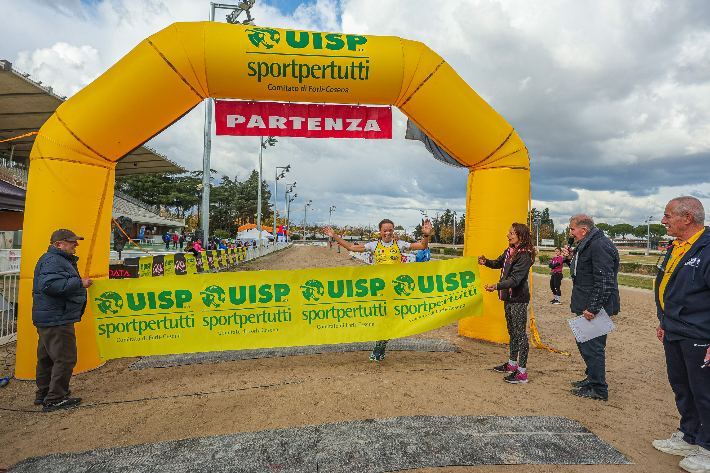
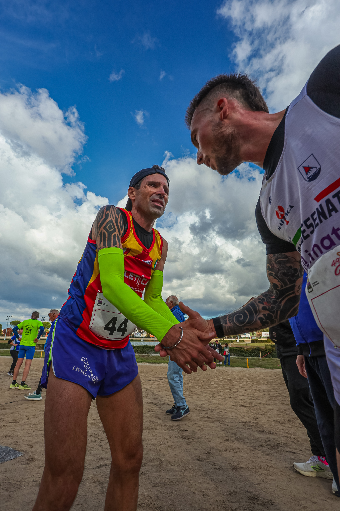

The 49th Giro dei Gessi took place in Cesena on 1 November 2026, with the Ippodromo del Savio as its start and finish venue. Organised by UISP Forlì-Cesena with the patronage of the Comune di Cesena, the event combined competitive running with ways to take part at a different pace.
The official programme scheduled the competitive race, advertised as 17 km, for 09:30. It also offered noncompetitive distances of 31, 13.5 and 8 km, Gessi Kids activities at the racecourse and the 6 km Gessi Dogs walk.
Autumn paths and moments at the racecourse
Michael Rosa’s photograph follows participants along a tree-lined path, with a dog beside the group. At the Ippodromo del Savio, Johnny’s images record a runner with arms raised beneath the yellow UISP arch and two runners greeting one another. Together, the frames bring the shared experience into view alongside the sporting effort.

Image Media coverage
Image Media covered the event with Eduardo Castro, Michael Rosa, Johnny, Giorgia Donato and Miriam Barbero. The photographs selected for this report are by Michael Rosa and Johnny.

Image Media coverage
IM News Editorial Desk
Eduardo Castro; Michael Rosa; Johnny; Giorgia Donato; Miriam Barbero / Image Media
Edition, date, venue and programme checked against UISP’s official event information.